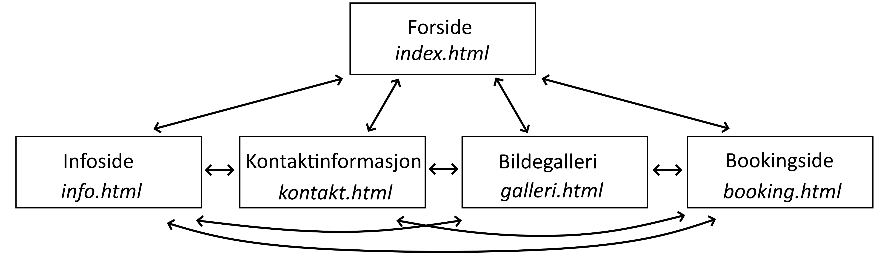

P2 - Retningslinjer for design av nettsiden.
1. Prosjektdetaljer
Dato: 06. Oktober 2021
Hanne Fyrand, Lene Johnsen, Kine Halstenrud, Sebastian Warholm, Daniel Hoftvedt
2. Klientdetaljer
Klientens navn: Kleists gate
Klientens posisjon: Boretslaget
3. Hensikt, mål og publikum
Hensikten med denne nettsiden er å skape en platform for beboere, tilflyttere og de som er nysgjerrige på borettslaget Kleistsgate 3. Denne platformen vil fungere som en felles informasjonsplatform hvor all nødvendig informasjon om for eksempel dugnad, kontaktpersoner og andre arrangementer vil foregå. Denne informasjonen vil gi beboerne en mer konkret rolle i hva som foregår i borettslaget, og i tillegg være en mulighet for beboerne å komme med diverse forslag og lignende. Platformen vil kunne bidra til effektivisering av fellesarealer, ved hjelp av funksjoner som lar beboerne booke vaskemaskin og ha oversikt over timeplanen for vaskekjelleren.
Publikum og brukere av denne nettsiden vil først og fremst være beboerne i Kleistsgate 3, og eierne av borettslaget. Nettsiden vil fungere som en informasjons- og kommunikasjonsplatform mellom eierne og beboerene. Eventuelle tilflyttere vil kunne ha god nytte av nettsiden for å skaffe seg oversikt over regler, normer og ansvarsroller for borettslaget ved innflytning. Nettsiden vil også være nyttig for de som leter etter et sted å bo og ønsker informasjon om borettslaget før de går på en eventuell visning.
4. Navigasjonsstruktur
Nettstedet vårt inneholder totalt fem (5). Den første siden brukeren vil lande på er forsiden index.html. Siden brukerne av nettsiden hovedsakelig kommer til å være beboende på området valgte vi å vise oppslagstavlen her fordi den inneholder den viktigste informasjonen for de beboende. Fra denne siden kan brukeren velge å gå til en av de fire andre sidene gjennom navigasjonsbaren på toppen for diverse info og fakta (info.html), kontaktinformasjon (kontakt.html), galleri (galleri.html) eller booking av vask og bakgård (booking.html). Når brukeren har trykket seg inn på en av de fire nettsidene kan de enten navigere seg tilbake til hjemmesiden ved å trykke på "Kleistsgate 3" teskten oppe i venstre hjørnet eller til en av de andre sidene gjennom navigasjonsbaren på toppen av alle de fem sidene.
Figuren nedenfor viser denne strukturen i en hierarkiform. Brukeren er ment å starte på forsiden og jobbe seg videre til den informasjonen eller funksjonen de selv ønsker å utnytte. Fordi brukerne mest sannsynlig kommer til å gjøre én ting om gangen er hver del av nettsiden lett tilgjengelig med en gang via navigasjonsbaren. I spesialtilfeller der brukeren trenger å navigere mellom de forkjellige sidene (f.eks. om de skal booke bakgården, men har glemt reglene for hva som er lov å gjøre der) er den muligheten lett tilgjengelig ettersom navigasjonsbaren er global og tilgjengelig overalt på nettstedet.
5. Layout og utseende
Under arbeidet med utformingen av designet på nettsiden ønsket vi å gi brukeren en behagelig leseopplevelse. Vi ønsket at nettsiden skulle være enkel å navigere og pen å se på. Stylingen av siden Bakgrunnsfargen er en lys rosa #FFEEEE. Fargen på hovedmenyen er en sjøgrønn #4C8A93. Knappene på hovedmenyen har en lysere sjøgrønn farge #77B4BC.
6. Innhold
Forside (index.html)
Forsiden vil være den første siden brukeren kommer inn på når man besøker nettsiden. På forsiden vil brukeren se en informasjonstavle hvor oppslag fra borettslaget blir hyppig oppdatert. Denne tavlen vil bli oppdatert av personene som sitter i styre. Forsiden inneholder en google-maps funksjon hvor brukeren kan se på et kart over hvor borettslaget befinner seg. Her har vi valgt google-maps som karttjeneste fordi de har god tredjepartistøtte og street-view funksjonalitet. Forsiden er preget av et bilde av borettslaget som har en rollovereffekt.
Info (info.html)
Infosiden vil tilby brukeren av nettsiden mer informasjon om borettslaget.
Galleri (galleri.html)
Bildegalleri av borettslaget og nærområdet. Her vil brukeren kunne få en bedre oversikt over hvordan borettslaget og de forskjellige nærområdene ser ut. Dette kan dette være nyttig for tilflyttende eller besøkende som referanse for informasjonen de kan finne gjennom karttjenester som google maps, som f.eks. ved å hjelpe dem kjenne seg igjen i kartinformasjonen.
Her vil bildene vises på rekke og rad i miniatyrform (450px høyde, bredde avhengig størrelsesforholdet til bildet) både for å minke innlastningstiden av siden og for å gi galleriet mer oversiktelighet. Brukeren vil kunne trykke på miniatyrbildene for å se på dem i mer detalj slik at bildet øker størrelse og dekker mesteparten av siden. De kan så enten bla gjennom bildene via to pilknapper på sidene av skjermen eller lukke fullskjermbildet ved å trykke på et kryss oppe i høyre hjørnet.

Kontakt (kontakt.html)
Kontaktsiden vil være der for å gi nytte til beboere og eventuelle tilflyttere til borettslaget. Siden vil inneholde kontaktinformasjon til alle viktige personer som er involvert i borettslaget. Dette innebærer styrelederen, varaleder, vaktmester og tillitsvalg. Her vil navn, rolle, telefonnummer og e-postadresse være tilgjengelig og lett synlig når man entrer siden. Dette er med på å oppfylle målet om å forenkle kontaktprosessen.

Kontaktsiden vil også inneholde en funksjon som gjør det mulig for beboere å komme med forslag til ledelsen ved hjelp av en meldingsfunksjon. Denne funksjonen samstemmer med målet om å gjøre det enklere å komme i kontakt med styret og ledelsen, og i tillegg gi beboerne en mer sentral rolle i det som foregår i borettslaget. Dette vil også være med på å tryrke demokratiet og borgerskapet. Denne funksjonen vil være nyttig for beboere da det er en enkel måte å komme i kontakt med ledelsen på. Den vil også være nyttig for ledelsen da de ikke trenger å være tilgjengelig på telefon hele tiden for å kunne ta i mot henvendelser fra beboerne. Funksjonen vil fungere på den måten at beboerene må skrive inn fult navn, leilighetsnummer og forslaget de har. Deretter finnes det en sendknapp for å bekrefte innsendelse av forslag.
Booking (booking.html)
Et av målene med denne nettsiden er å gjøre det enklere for beboerne å benytte seg av de ulike fellesarealene i bygget. Derfor vil vi implementere to ulike bookingsystemer; et for vaskeriet og et for bakgården. På denne måten kan beboerne enklere få oversikt over når de ulike fasilitetene er opptatt eller tilgjengelig for bruk.
Hver av bookingfunksjonene består av ulike rubrikker med tidspunkter brukerne kan klikke på og må skrive inn navnet sitt og leilighetsnummeret for å booke. Her vil ledige tider markeres i grønt, og utilgjengelige tider vil være markert i rødt.
6. Innhold
7. Minimumskrav Javascript
Nettsiden skal inneholde fire individuelle JavaScript applikasjoner. På forsiden vil det ligge et bilde med rollovereffekt. Dette vil være et bilde av nabolaget, hvor man beveger musen over bildet og får fram et annet bilde av bakgården. Vi prøver først med rollovereffekt her, men går kanskje over til at en bukett bilder som rullerer på forsiden av seg selv. På «Booking» og «kontakt» vil det være to ganske like validatorer. Disse vil spørre om navn og leilighetsnummer fra 1 – 23. Om For- eller etternavn mangler vil du ikke kunne sende inn melding eller booking. Det samme vil gjelde for leilighetsnummeret. Dette for å ha full kontroll på hvem som booker eller sender inn en eventuell forespørsel/melding.